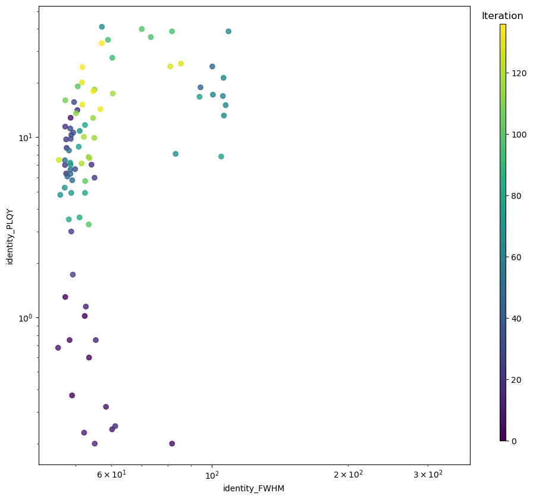
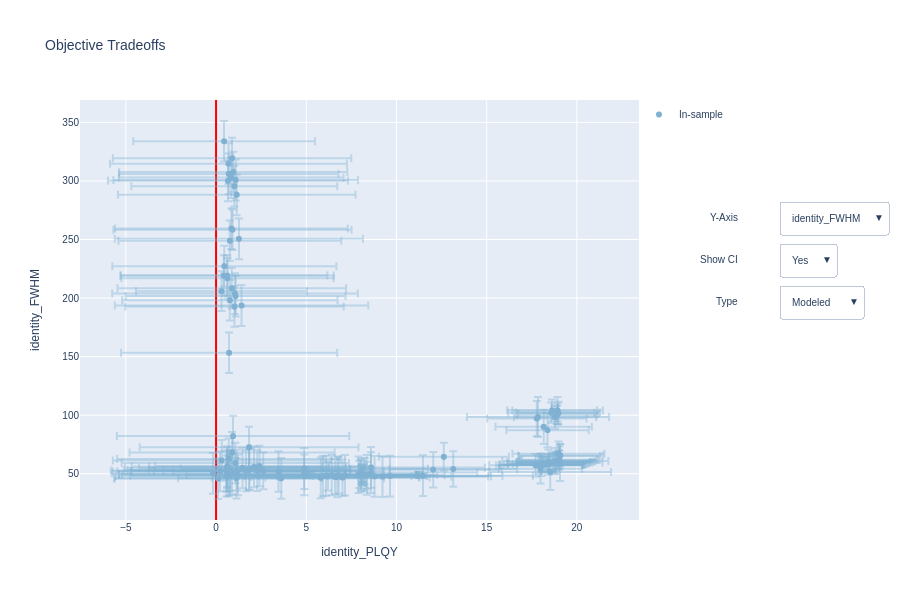
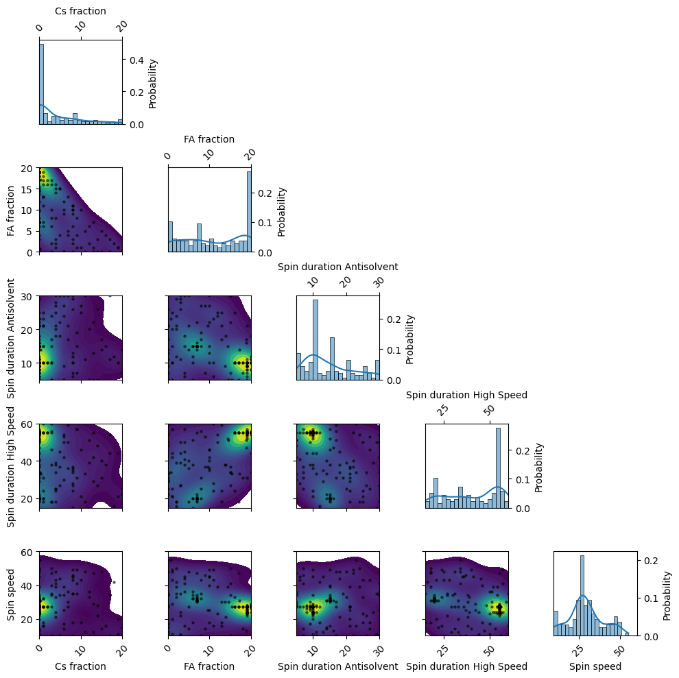
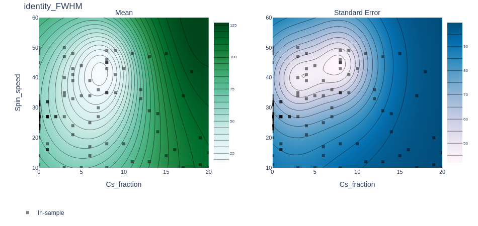
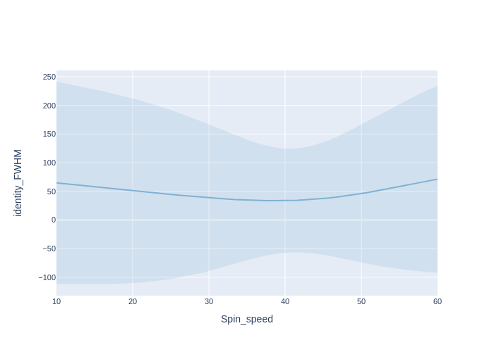
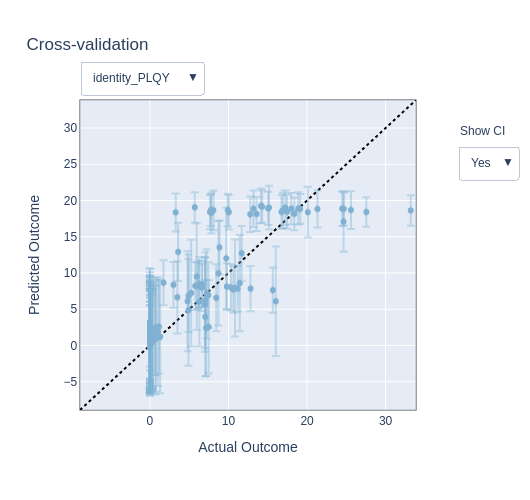
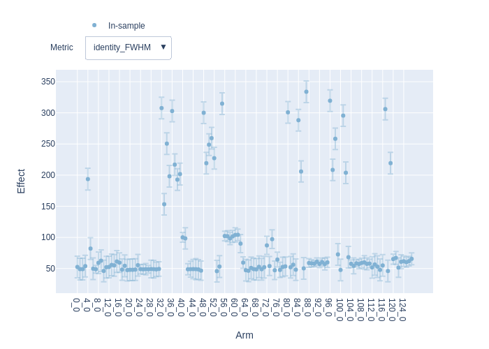
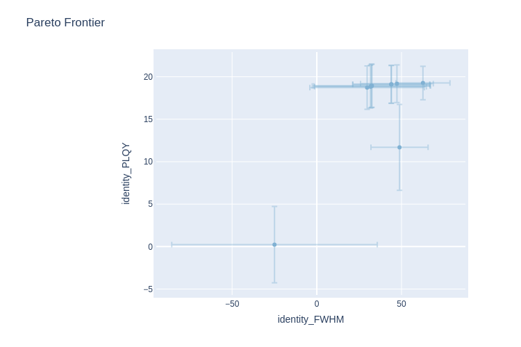

Multi-objective optimization for perovskite material composition
Version 1.0.0 (c) Vincent M. Le Corre, Larry Lueer, i-MEET 2021-2023
This notebook is made to use BOAR to design experiments. Here, we show how to load some data from a presampling, and how to use BOAR to suggest the next set of experiment using Bayesian optimization. The goal here is to do multi-objective optimization (MO) to maximize the phololuminescence quantum yield (PLQY) and minimize the full width at half maximum (FWHM) of a perovskite thin film.
Note: The data used here is real data generated in the i-MEET and HI-ERN labs at the university of Erlangen-Nuremberg (FAU) by Frederik Schmitt. The data is not published yet, and is only used here for demonstration purposes. For more information, please contact us.
[1]:
# Activate matplotlib widgets
# %matplotlib inline
# # comment the next line if you are on the jupyterhub server
# %matplotlib widget
# %matplotlib notebook
import plotly.io as pio # comment out to only render png
pio.renderers.default = 'png'
# Import libraries
import sys,os,types,copy
import warnings
import pandas as pd
warnings.filterwarnings('ignore') # comment this out to see warnings
# Import boar
sys.path.append('../') # comment out if the Notebook is in the Notebooks folder
from boar import *
from boar.core.optimization_botorch import *
# import additional libraries from Ax
from ax.utils.notebook.plotting import render, init_notebook_plotting # for plotting in notebook
from ax.plot.slice import plot_slice
from ax.plot.scatter import interact_fitted,plot_objective_vs_constraints,tile_fitted
from ax.modelbridge.cross_validation import cross_validate
from ax.plot.contour import interact_contour
from ax.plot.diagnostic import interact_cross_validation
from ax.plot.pareto_utils import compute_posterior_pareto_frontier
from ax.plot.pareto_frontier import plot_pareto_frontier
# Import homemade package by VLC
# import boar.SIMsalabim_utils.plot_settings_screen # to set default plot settings
[2]:
# Define the path to the data
curr_dir = os.getcwd() # current directory
res_dir = os.path.join(os.path.abspath('../'),'temp') # path to the results directory
data_dir = os.path.join(os.path.abspath('../'),'Example_Data')
[3]:
names = ['status', 'campaign_name', 'iteration', 'batch_number',
'Cs_fraction',
'Fa_fraction',
'Ma_fraction',
'Spin_duration_Antisolvent',
'Spin_duration_High_Speed',
'Spin_speed',
'FWHM',
'PLQY', 'merit', 'updated_date']
df = pd.read_csv(os.path.join(data_dir, 'Frederik','Pero_PLQY_FWHM.csv'), names=names, header=0)
print(df.head())
status campaign_name iteration batch_number Cs_fraction Fa_fraction \
0 ok Pero 2 Targets 0 0 0.15 0.40
1 ok Pero 2 Targets 0 1 0.30 0.60
2 ok Pero 2 Targets 0 2 0.70 0.15
3 ok Pero 2 Targets 0 3 0.20 0.40
4 ok Pero 2 Targets 0 4 0.85 0.00
Ma_fraction Spin_duration_Antisolvent Spin_duration_High_Speed \
0 0.45 17.0 56.0
1 0.10 24.0 54.0
2 0.15 26.0 27.0
3 0.40 27.0 25.0
4 0.15 30.0 54.0
Spin_speed FWHM PLQY merit updated_date
0 1000.0 52.38 1.02 0.567051 2023-05-03T12:41:14.581252Z
1 3900.0 49.11 0.37 0.572715 2023-05-03T12:41:14.591554Z
2 2200.0 47.44 1.30 0.564611 2023-05-03T12:41:14.599691Z
3 4300.0 53.54 0.60 0.570711 2023-05-03T12:41:14.606672Z
4 3400.0 194.23 0.00 0.699095 2023-05-03T12:41:14.613394Z
[4]:
params_names = ['Cs_fraction','Fa_fraction','Spin_duration_Antisolvent','Spin_duration_High_Speed','Spin_speed']
target_names = ['FWHM','PLQY']
df_filtered = copy.deepcopy(df[params_names+target_names])
df_filtered = df_filtered.drop_duplicates()
df_filtered = df_filtered.dropna()
stepsize_fraction = 0.05
stepsize_spin_speed = 100
# transform the data to the right format
df_filtered['Cs_fraction'] = df_filtered['Cs_fraction'].apply(lambda x: float(round(x/stepsize_fraction)))
df_filtered['Fa_fraction'] = df_filtered['Fa_fraction'].apply(lambda x: float(round(x/stepsize_fraction)))
df_filtered['Spin_duration_Antisolvent'] = df_filtered['Spin_duration_Antisolvent'].apply(lambda x: round(x))
df_filtered['Spin_duration_High_Speed'] = df_filtered['Spin_duration_High_Speed'].apply(lambda x: round(x))
df_filtered['Spin_speed'] = df_filtered['Spin_speed'].apply(lambda x: round(x/stepsize_spin_speed))
dic = {'x':[],'y_0':[],'ydyn_0':1,'y_1':[],'ydyn_1':1}
for num in range(len(df_filtered)):
dic['x'].append(df_filtered[params_names].iloc[num].values.tolist())
dic['y_0'].append(df_filtered[target_names[0]].iloc[num])
dic['y_1'].append(df_filtered[target_names[1]].iloc[num])
# save to res_dir
with open(os.path.join(res_dir,'old_XY.json'), 'w') as fp:
json.dump(dic, fp)
Define the free parameters to be optimized
[5]:
params = []
Cs_fraction = Fitparam(name = 'Cs_fraction', val = 0, lims = [0, int(1/stepsize_fraction)], relRange = 1, range_type = 'lin',
lim_type = 'absolute',optim_type='lin', display_name = 'Cs fraction', unit = 'nm',rescale=False)
params.append(Cs_fraction)
Fa_fraction = Fitparam(name = 'Fa_fraction', val = 0, lims = [0, int(1/stepsize_fraction)], relRange = 1, range_type = 'lin',
lim_type = 'absolute',optim_type='lin', display_name = 'FA fraction', unit = 'nm',rescale=False)
params.append(Fa_fraction)
Spin_duration_Antisolvent = Fitparam(name = 'Spin_duration_Antisolvent', val = 5, lims = [5, 30], relRange = 1, range_type = 'lin',
lim_type = 'absolute',optim_type='lin', display_name = 'Spin duration Antisolvent', unit = 's',val_type='int')
params.append(Spin_duration_Antisolvent)
Spin_duration_High_Speed = Fitparam(name = 'Spin_duration_High_Speed', val = 20, lims = [15, 60], relRange = 1, range_type = 'lin',
lim_type = 'absolute',optim_type='lin', display_name = 'Spin duration High Speed', unit = 's',val_type='int')
params.append(Spin_duration_High_Speed)
Spin_speed = Fitparam(name = 'Spin_speed', val = 20, lims = [10, 60], relRange = 1, range_type = 'lin',
lim_type = 'absolute',optim_type='lin', display_name = 'Spin speed', unit = 'RPM',val_type='int') # reall spin speed is param*100
params.append(Spin_speed)
[6]:
# create an excel file with len(params) columns and nb_new_exp rows filled with nan
nb_new_exp = 9
dat_array = np.zeros((nb_new_exp, len(params))).tolist()
# replace all with 'nan'
for i in range(len(dat_array)):
for j in range(len(dat_array[i])):
dat_array[i][j] = 'nan'
pnames = [ p.name for p in params ]
df = pd.DataFrame(dat_array, columns=pnames)
df.to_excel(os.path.join(res_dir,'BOAR_Exp.xlsx'), index=False)
df2 = pd.read_excel(os.path.join(res_dir,'BOAR_Exp.xlsx'))
print(df2)
def exp_to_df(X,params):
pass
Cs_fraction Fa_fraction Spin_duration_Antisolvent \
0 NaN NaN NaN
1 NaN NaN NaN
2 NaN NaN NaN
3 NaN NaN NaN
4 NaN NaN NaN
5 NaN NaN NaN
6 NaN NaN NaN
7 NaN NaN NaN
8 NaN NaN NaN
Spin_duration_High_Speed Spin_speed
0 NaN NaN
1 NaN NaN
2 NaN NaN
3 NaN NaN
4 NaN NaN
5 NaN NaN
6 NaN NaN
7 NaN NaN
8 NaN NaN
Start the optimization
[7]:
# Define the targets and the model for the TM problem
X_dimensions = ['_']
y_dimension = 'FWHM'
target = {'model':exp_to_df,'target_name':'FWHM','minimize':True,
'data':{'X':[0],'y':[0],'X_dimensions':X_dimensions,'X_units':['s',''],'y_dimension':y_dimension,'y_unit':'nm'}
,'target_weight':1, 'weight':1}
y_dimension = 'PLQY'
target2 = {'model':exp_to_df,'target_name':'PLQY','minimize':False,
'data':{'X':[0],'y':[100],'X_dimensions':X_dimensions,'X_units':['s',''],'y_dimension':y_dimension,'y_unit':'%'}
,'target_weight':1, 'weight':1}
targets = [target,target2]
obj_type='identity'
loss='linear'
threshold=[50,0.5]
mo = MooBOtorch(params=params, targets= targets) # initialize the optimization object
mo.warmstart = 'recall'
mo.parallel = False # needed if number of cores is lower than number of CPU - 1 to ensure we output the right number of points
# mo.SaveOldXY2file = os.path.join(res_dir,'old_XY.json')
mo.Path2OldXY = os.path.join(res_dir,'old_XY.json')
mo.parameter_constraints = [f'{stepsize_fraction}*Cs_fraction + {stepsize_fraction}*Fa_fraction <= 1']
# Define custom evaluation function
def evaluate_custom(self,px,obj_type,loss,threshold=1,is_MOO=True):
pass
mo.evaluate_custom = types.MethodType(evaluate_custom, mo) # add the method to the object FullyBayesianMOO
kwargs_posterior = {'Nres':10,'Ninteg':1e3,'logscale':True,'vmin':1e-100,'zoom':0,'min_prob':1e-40,'clear_axis':False,'True_values':None,'show_points':True,'savefig':False,'figname':'param_posterior','full_grid':True,'randomize':True}
ax_client = mo.BoTorchOpti(n_jobs=[nb_new_exp], n_step_points = [nb_new_exp], models=['MOO'],obj_type=obj_type,loss=loss,threshold=threshold,use_CUDA=True,is_MOO=True,verbose=True,show_posterior=False,kwargs_posterior=kwargs_posterior,use_custom_func=False,suggest_only=True)
[INFO 09-20 09:59:35] ax.service.ax_client: Starting optimization with verbose logging. To disable logging, set the `verbose_logging` argument to `False`. Note that float values in the logs are rounded to 6 decimal points.
[INFO 09-20 09:59:35] ax.service.utils.instantiation: Created search space: SearchSpace(parameters=[RangeParameter(name='Cs_fraction', parameter_type=FLOAT, range=[0.0, 20.0]), RangeParameter(name='Fa_fraction', parameter_type=FLOAT, range=[0.0, 20.0]), RangeParameter(name='Spin_duration_Antisolvent', parameter_type=INT, range=[5, 30]), RangeParameter(name='Spin_duration_High_Speed', parameter_type=INT, range=[15, 60]), RangeParameter(name='Spin_speed', parameter_type=INT, range=[10, 60])], parameter_constraints=[ParameterConstraint(0.05*Cs_fraction + 0.05*Fa_fraction <= 1.0)]).
[INFO 09-20 09:59:35] ax.core.experiment: Attached custom parameterizations [{'Cs_fraction': 3.0, 'Fa_fraction': 8.0, 'Spin_duration_Antisolvent': 17, 'Spin_duration_High_Speed': 56, 'Spin_speed': 10}] as trial 0.
[INFO 09-20 09:59:35] ax.service.ax_client: Completed trial 0 with data: {'identity_FWHM': (52.38, None), 'identity_PLQY': (1.02, None)}.
[INFO 09-20 09:59:35] ax.core.experiment: Attached custom parameterizations [{'Cs_fraction': 6.0, 'Fa_fraction': 12.0, 'Spin_duration_Antisolvent': 24, 'Spin_duration_High_Speed': 54, 'Spin_speed': 39}] as trial 1.
[INFO 09-20 09:59:35] ax.service.ax_client: Completed trial 1 with data: {'identity_FWHM': (49.11, None), 'identity_PLQY': (0.37, None)}.
[INFO 09-20 09:59:35] ax.core.experiment: Attached custom parameterizations [{'Cs_fraction': 14.0, 'Fa_fraction': 3.0, 'Spin_duration_Antisolvent': 26, 'Spin_duration_High_Speed': 27, 'Spin_speed': 22}] as trial 2.
[INFO 09-20 09:59:35] ax.service.ax_client: Completed trial 2 with data: {'identity_FWHM': (47.44, None), 'identity_PLQY': (1.3, None)}.
[INFO 09-20 09:59:35] ax.core.experiment: Attached custom parameterizations [{'Cs_fraction': 4.0, 'Fa_fraction': 8.0, 'Spin_duration_Antisolvent': 27, 'Spin_duration_High_Speed': 25, 'Spin_speed': 43}] as trial 3.
[INFO 09-20 09:59:35] ax.service.ax_client: Completed trial 3 with data: {'identity_FWHM': (53.54, None), 'identity_PLQY': (0.6, None)}.
[INFO 09-20 09:59:35] ax.core.experiment: Attached custom parameterizations [{'Cs_fraction': 17.0, 'Fa_fraction': 0.0, 'Spin_duration_Antisolvent': 30, 'Spin_duration_High_Speed': 54, 'Spin_speed': 34}] as trial 4.
[INFO 09-20 09:59:35] ax.service.ax_client: Completed trial 4 with data: {'identity_FWHM': (194.23, None), 'identity_PLQY': (0.0, None)}.
[INFO 09-20 09:59:35] ax.core.experiment: Attached custom parameterizations [{'Cs_fraction': 9.0, 'Fa_fraction': 1.0, 'Spin_duration_Antisolvent': 15, 'Spin_duration_High_Speed': 57, 'Spin_speed': 49}] as trial 5.
[INFO 09-20 09:59:35] ax.service.ax_client: Completed trial 5 with data: {'identity_FWHM': (81.66, None), 'identity_PLQY': (0.2, None)}.
[INFO 09-20 09:59:35] ax.core.experiment: Attached custom parameterizations [{'Cs_fraction': 9.0, 'Fa_fraction': 4.0, 'Spin_duration_Antisolvent': 7, 'Spin_duration_High_Speed': 57, 'Spin_speed': 41}] as trial 6.
[INFO 09-20 09:59:35] ax.service.ax_client: Completed trial 6 with data: {'identity_FWHM': (48.49, None), 'identity_PLQY': (0.75, None)}.
[INFO 09-20 09:59:35] ax.core.experiment: Attached custom parameterizations [{'Cs_fraction': 0.0, 'Fa_fraction': 7.0, 'Spin_duration_Antisolvent': 15, 'Spin_duration_High_Speed': 20, 'Spin_speed': 31}] as trial 7.
[INFO 09-20 09:59:35] ax.service.ax_client: Completed trial 7 with data: {'identity_FWHM': (48.74, None), 'identity_PLQY': (12.81, None)}.
[INFO 09-20 09:59:35] ax.core.experiment: Attached custom parameterizations [{'Cs_fraction': 4.0, 'Fa_fraction': 3.0, 'Spin_duration_Antisolvent': 28, 'Spin_duration_High_Speed': 39, 'Spin_speed': 24}] as trial 8.
[INFO 09-20 09:59:35] ax.service.ax_client: Completed trial 8 with data: {'identity_FWHM': (58.35, None), 'identity_PLQY': (0.32, None)}.
[INFO 09-20 09:59:35] ax.core.experiment: Attached custom parameterizations [{'Cs_fraction': 10.0, 'Fa_fraction': 1.0, 'Spin_duration_Antisolvent': 25, 'Spin_duration_High_Speed': 21, 'Spin_speed': 43}] as trial 9.
[INFO 09-20 09:59:35] ax.service.ax_client: Completed trial 9 with data: {'identity_FWHM': (60.18, None), 'identity_PLQY': (0.24, None)}.
[INFO 09-20 09:59:35] ax.core.experiment: Attached custom parameterizations [{'Cs_fraction': 10.0, 'Fa_fraction': 10.0, 'Spin_duration_Antisolvent': 27, 'Spin_duration_High_Speed': 46, 'Spin_speed': 18}] as trial 10.
[INFO 09-20 09:59:35] ax.service.ax_client: Completed trial 10 with data: {'identity_FWHM': (45.74, None), 'identity_PLQY': (0.68, None)}.
[INFO 09-20 09:59:35] ax.core.experiment: Attached custom parameterizations [{'Cs_fraction': 6.0, 'Fa_fraction': 9.0, 'Spin_duration_Antisolvent': 27, 'Spin_duration_High_Speed': 53, 'Spin_speed': 14}] as trial 11.
[INFO 09-20 09:59:35] ax.service.ax_client: Completed trial 11 with data: {'identity_FWHM': (52.21, None), 'identity_PLQY': (0.23, None)}.
[INFO 09-20 09:59:35] ax.core.experiment: Attached custom parameterizations [{'Cs_fraction': 3.0, 'Fa_fraction': 10.0, 'Spin_duration_Antisolvent': 15, 'Spin_duration_High_Speed': 46, 'Spin_speed': 40}] as trial 12.
[INFO 09-20 09:59:35] ax.service.ax_client: Completed trial 12 with data: {'identity_FWHM': (52.67, None), 'identity_PLQY': (1.15, None)}.
[INFO 09-20 09:59:35] ax.core.experiment: Attached custom parameterizations [{'Cs_fraction': 3.0, 'Fa_fraction': 6.0, 'Spin_duration_Antisolvent': 10, 'Spin_duration_High_Speed': 38, 'Spin_speed': 34}] as trial 13.
[INFO 09-20 09:59:35] ax.service.ax_client: Completed trial 13 with data: {'identity_FWHM': (55.4, None), 'identity_PLQY': (0.75, None)}.
[INFO 09-20 09:59:35] ax.core.experiment: Attached custom parameterizations [{'Cs_fraction': 6.0, 'Fa_fraction': 10.0, 'Spin_duration_Antisolvent': 30, 'Spin_duration_High_Speed': 42, 'Spin_speed': 25}] as trial 14.
[INFO 09-20 09:59:35] ax.service.ax_client: Completed trial 14 with data: {'identity_FWHM': (55.11, None), 'identity_PLQY': (0.2, None)}.
[INFO 09-20 09:59:35] ax.core.experiment: Attached custom parameterizations [{'Cs_fraction': 5.0, 'Fa_fraction': 4.0, 'Spin_duration_Antisolvent': 18, 'Spin_duration_High_Speed': 45, 'Spin_speed': 44}] as trial 15.
[INFO 09-20 09:59:35] ax.service.ax_client: Completed trial 15 with data: {'identity_FWHM': (61.16, None), 'identity_PLQY': (0.25, None)}.
[INFO 09-20 09:59:35] ax.core.experiment: Attached custom parameterizations [{'Cs_fraction': 0.0, 'Fa_fraction': 20.0, 'Spin_duration_Antisolvent': 8, 'Spin_duration_High_Speed': 55, 'Spin_speed': 26}] as trial 16.
[INFO 09-20 09:59:35] ax.service.ax_client: Completed trial 16 with data: {'identity_FWHM': (50.45, None), 'identity_PLQY': (14.13, None)}.
[INFO 09-20 09:59:35] ax.core.experiment: Attached custom parameterizations [{'Cs_fraction': 0.0, 'Fa_fraction': 0.0, 'Spin_duration_Antisolvent': 21, 'Spin_duration_High_Speed': 29, 'Spin_speed': 27}] as trial 17.
[INFO 09-20 09:59:35] ax.service.ax_client: Completed trial 17 with data: {'identity_FWHM': (47.65, None), 'identity_PLQY': (6.29, None)}.
[INFO 09-20 09:59:35] ax.core.experiment: Attached custom parameterizations [{'Cs_fraction': 3.0, 'Fa_fraction': 17.0, 'Spin_duration_Antisolvent': 5, 'Spin_duration_High_Speed': 18, 'Spin_speed': 47}] as trial 18.
[INFO 09-20 09:59:35] ax.service.ax_client: Completed trial 18 with data: {'identity_FWHM': (54.2, None), 'identity_PLQY': (7.04, None)}.
[INFO 09-20 09:59:35] ax.core.experiment: Attached custom parameterizations [{'Cs_fraction': 1.0, 'Fa_fraction': 19.0, 'Spin_duration_Antisolvent': 21, 'Spin_duration_High_Speed': 31, 'Spin_speed': 27}] as trial 19.
[INFO 09-20 09:59:35] ax.service.ax_client: Completed trial 19 with data: {'identity_FWHM': (47.42, None), 'identity_PLQY': (11.44, None)}.
[INFO 09-20 09:59:35] ax.core.experiment: Attached custom parameterizations [{'Cs_fraction': 0.0, 'Fa_fraction': 0.0, 'Spin_duration_Antisolvent': 21, 'Spin_duration_High_Speed': 33, 'Spin_speed': 20}] as trial 20.
[INFO 09-20 09:59:35] ax.service.ax_client: Completed trial 20 with data: {'identity_FWHM': (47.37, None), 'identity_PLQY': (7.01, None)}.
[INFO 09-20 09:59:35] ax.core.experiment: Attached custom parameterizations [{'Cs_fraction': 0.0, 'Fa_fraction': 15.0, 'Spin_duration_Antisolvent': 7, 'Spin_duration_High_Speed': 34, 'Spin_speed': 50}] as trial 21.
[INFO 09-20 09:59:35] ax.service.ax_client: Completed trial 21 with data: {'identity_FWHM': (47.76, None), 'identity_PLQY': (8.72, None)}.
[INFO 09-20 09:59:35] ax.core.experiment: Attached custom parameterizations [{'Cs_fraction': 0.0, 'Fa_fraction': 18.0, 'Spin_duration_Antisolvent': 7, 'Spin_duration_High_Speed': 31, 'Spin_speed': 14}] as trial 22.
[INFO 09-20 09:59:35] ax.service.ax_client: Completed trial 22 with data: {'identity_FWHM': (47.65, None), 'identity_PLQY': (9.72, None)}.
[INFO 09-20 09:59:35] ax.core.experiment: Attached custom parameterizations [{'Cs_fraction': 0.0, 'Fa_fraction': 20.0, 'Spin_duration_Antisolvent': 18, 'Spin_duration_High_Speed': 34, 'Spin_speed': 48}] as trial 23.
[INFO 09-20 09:59:35] ax.service.ax_client: Completed trial 23 with data: {'identity_FWHM': (55.05, None), 'identity_PLQY': (5.96, None)}.
[INFO 09-20 09:59:35] ax.core.experiment: Attached custom parameterizations [{'Cs_fraction': 0.0, 'Fa_fraction': 7.0, 'Spin_duration_Antisolvent': 15, 'Spin_duration_High_Speed': 19, 'Spin_speed': 31}] as trial 24.
[INFO 09-20 09:59:35] ax.service.ax_client: Completed trial 24 with data: {'identity_FWHM': (48.9, None), 'identity_PLQY': (3.0, None)}.
[INFO 09-20 09:59:35] ax.core.experiment: Attached custom parameterizations [{'Cs_fraction': 0.0, 'Fa_fraction': 7.0, 'Spin_duration_Antisolvent': 15, 'Spin_duration_High_Speed': 21, 'Spin_speed': 31}] as trial 25.
[INFO 09-20 09:59:35] ax.service.ax_client: Completed trial 25 with data: {'identity_FWHM': (49.29, None), 'identity_PLQY': (1.73, None)}.
[INFO 09-20 09:59:35] ax.core.experiment: Attached custom parameterizations [{'Cs_fraction': 0.0, 'Fa_fraction': 7.0, 'Spin_duration_Antisolvent': 15, 'Spin_duration_High_Speed': 20, 'Spin_speed': 30}] as trial 26.
[INFO 09-20 09:59:35] ax.service.ax_client: Completed trial 26 with data: {'identity_FWHM': (48.92, None), 'identity_PLQY': (10.31, None)}.
[INFO 09-20 09:59:35] ax.core.experiment: Attached custom parameterizations [{'Cs_fraction': 0.0, 'Fa_fraction': 7.0, 'Spin_duration_Antisolvent': 15, 'Spin_duration_High_Speed': 20, 'Spin_speed': 32}] as trial 27.
[INFO 09-20 09:59:35] ax.service.ax_client: Completed trial 27 with data: {'identity_FWHM': (49.61, None), 'identity_PLQY': (15.65, None)}.
[INFO 09-20 09:59:35] ax.core.experiment: Attached custom parameterizations [{'Cs_fraction': 0.0, 'Fa_fraction': 7.0, 'Spin_duration_Antisolvent': 14, 'Spin_duration_High_Speed': 20, 'Spin_speed': 31}] as trial 28.
[INFO 09-20 09:59:35] ax.service.ax_client: Completed trial 28 with data: {'identity_FWHM': (48.79, None), 'identity_PLQY': (9.79, None)}.
[INFO 09-20 09:59:35] ax.core.experiment: Attached custom parameterizations [{'Cs_fraction': 0.0, 'Fa_fraction': 7.0, 'Spin_duration_Antisolvent': 16, 'Spin_duration_High_Speed': 20, 'Spin_speed': 31}] as trial 29.
[INFO 09-20 09:59:35] ax.service.ax_client: Completed trial 29 with data: {'identity_FWHM': (48.66, None), 'identity_PLQY': (11.17, None)}.
[INFO 09-20 09:59:35] ax.core.experiment: Attached custom parameterizations [{'Cs_fraction': 0.0, 'Fa_fraction': 7.0, 'Spin_duration_Antisolvent': 15, 'Spin_duration_High_Speed': 22, 'Spin_speed': 31}] as trial 30.
[INFO 09-20 09:59:35] ax.service.ax_client: Completed trial 30 with data: {'identity_FWHM': (49.87, None), 'identity_PLQY': (6.65, None)}.
[INFO 09-20 09:59:35] ax.core.experiment: Attached custom parameterizations [{'Cs_fraction': 0.0, 'Fa_fraction': 7.0, 'Spin_duration_Antisolvent': 15, 'Spin_duration_High_Speed': 18, 'Spin_speed': 31}] as trial 31.
[INFO 09-20 09:59:35] ax.service.ax_client: Completed trial 31 with data: {'identity_FWHM': (49.4, None), 'identity_PLQY': (10.6, None)}.
[INFO 09-20 09:59:35] ax.core.experiment: Attached custom parameterizations [{'Cs_fraction': 19.0, 'Fa_fraction': 1.0, 'Spin_duration_Antisolvent': 10, 'Spin_duration_High_Speed': 44, 'Spin_speed': 11}] as trial 32.
[INFO 09-20 09:59:35] ax.service.ax_client: Completed trial 32 with data: {'identity_FWHM': (308.45, None), 'identity_PLQY': (0.0, None)}.
[INFO 09-20 09:59:35] ax.core.experiment: Attached custom parameterizations [{'Cs_fraction': 15.0, 'Fa_fraction': 5.0, 'Spin_duration_Antisolvent': 14, 'Spin_duration_High_Speed': 40, 'Spin_speed': 14}] as trial 33.
[INFO 09-20 09:59:35] ax.service.ax_client: Completed trial 33 with data: {'identity_FWHM': (152.2, None), 'identity_PLQY': (0.0, None)}.
[INFO 09-20 09:59:35] ax.core.experiment: Attached custom parameterizations [{'Cs_fraction': 18.0, 'Fa_fraction': 2.0, 'Spin_duration_Antisolvent': 12, 'Spin_duration_High_Speed': 16, 'Spin_speed': 42}] as trial 34.
[INFO 09-20 09:59:35] ax.service.ax_client: Completed trial 34 with data: {'identity_FWHM': (251.45, None), 'identity_PLQY': (0.0, None)}.
[INFO 09-20 09:59:35] ax.core.experiment: Attached custom parameterizations [{'Cs_fraction': 19.0, 'Fa_fraction': 1.0, 'Spin_duration_Antisolvent': 10, 'Spin_duration_High_Speed': 21, 'Spin_speed': 20}] as trial 35.
[INFO 09-20 09:59:35] ax.service.ax_client: Completed trial 35 with data: {'identity_FWHM': (197.45, None), 'identity_PLQY': (0.0, None)}.
[INFO 09-20 09:59:35] ax.core.experiment: Attached custom parameterizations [{'Cs_fraction': 17.0, 'Fa_fraction': 3.0, 'Spin_duration_Antisolvent': 11, 'Spin_duration_High_Speed': 44, 'Spin_speed': 10}] as trial 36.
[INFO 09-20 09:59:35] ax.service.ax_client: Completed trial 36 with data: {'identity_FWHM': (303.85, None), 'identity_PLQY': (0.0, None)}.
[INFO 09-20 09:59:35] ax.core.experiment: Attached custom parameterizations [{'Cs_fraction': 16.0, 'Fa_fraction': 4.0, 'Spin_duration_Antisolvent': 15, 'Spin_duration_High_Speed': 38, 'Spin_speed': 16}] as trial 37.
[INFO 09-20 09:59:35] ax.service.ax_client: Completed trial 37 with data: {'identity_FWHM': (217.65, None), 'identity_PLQY': (0.0, None)}.
[INFO 09-20 09:59:35] ax.core.experiment: Attached custom parameterizations [{'Cs_fraction': 20.0, 'Fa_fraction': 0.0, 'Spin_duration_Antisolvent': 14, 'Spin_duration_High_Speed': 22, 'Spin_speed': 15}] as trial 38.
[INFO 09-20 09:59:35] ax.service.ax_client: Completed trial 38 with data: {'identity_FWHM': (193.05, None), 'identity_PLQY': (0.0, None)}.
[INFO 09-20 09:59:35] ax.core.experiment: Attached custom parameterizations [{'Cs_fraction': 20.0, 'Fa_fraction': 0.0, 'Spin_duration_Antisolvent': 7, 'Spin_duration_High_Speed': 25, 'Spin_speed': 10}] as trial 39.
[INFO 09-20 09:59:35] ax.service.ax_client: Completed trial 39 with data: {'identity_FWHM': (201.95, None), 'identity_PLQY': (0.0, None)}.
[INFO 09-20 09:59:35] ax.core.experiment: Attached custom parameterizations [{'Cs_fraction': 0.0, 'Fa_fraction': 20.0, 'Spin_duration_Antisolvent': 10, 'Spin_duration_High_Speed': 55, 'Spin_speed': 27}] as trial 40.
[INFO 09-20 09:59:35] ax.service.ax_client: Completed trial 40 with data: {'identity_FWHM': (94.35, None), 'identity_PLQY': (18.89, None)}.
[INFO 09-20 09:59:35] ax.core.experiment: Attached custom parameterizations [{'Cs_fraction': 0.0, 'Fa_fraction': 20.0, 'Spin_duration_Antisolvent': 8, 'Spin_duration_High_Speed': 44, 'Spin_speed': 24}] as trial 41.
[INFO 09-20 09:59:35] ax.service.ax_client: Completed trial 41 with data: {'identity_FWHM': (100.2, None), 'identity_PLQY': (24.65, None)}.
[INFO 09-20 09:59:35] ax.core.experiment: Attached custom parameterizations [{'Cs_fraction': 0.0, 'Fa_fraction': 7.0, 'Spin_duration_Antisolvent': 15, 'Spin_duration_High_Speed': 20, 'Spin_speed': 33}] as trial 42.
[INFO 09-20 09:59:35] ax.service.ax_client: Completed trial 42 with data: {'identity_FWHM': (47.95, None), 'identity_PLQY': (6.05, None)}.
[INFO 09-20 09:59:35] ax.core.experiment: Attached custom parameterizations [{'Cs_fraction': 0.0, 'Fa_fraction': 7.0, 'Spin_duration_Antisolvent': 15, 'Spin_duration_High_Speed': 20, 'Spin_speed': 34}] as trial 43.
[INFO 09-20 09:59:35] ax.service.ax_client: Completed trial 43 with data: {'identity_FWHM': (49.15, None), 'identity_PLQY': (5.77, None)}.
[INFO 09-20 09:59:35] ax.core.experiment: Attached custom parameterizations [{'Cs_fraction': 0.0, 'Fa_fraction': 6.0, 'Spin_duration_Antisolvent': 15, 'Spin_duration_High_Speed': 20, 'Spin_speed': 32}] as trial 44.
[INFO 09-20 09:59:35] ax.service.ax_client: Completed trial 44 with data: {'identity_FWHM': (48.7, None), 'identity_PLQY': (6.61, None)}.
[INFO 09-20 09:59:35] ax.core.experiment: Attached custom parameterizations [{'Cs_fraction': 0.0, 'Fa_fraction': 8.0, 'Spin_duration_Antisolvent': 15, 'Spin_duration_High_Speed': 20, 'Spin_speed': 32}] as trial 45.
[INFO 09-20 09:59:35] ax.service.ax_client: Completed trial 45 with data: {'identity_FWHM': (48.7, None), 'identity_PLQY': (6.26, None)}.
[INFO 09-20 09:59:35] ax.core.experiment: Attached custom parameterizations [{'Cs_fraction': 1.0, 'Fa_fraction': 6.0, 'Spin_duration_Antisolvent': 15, 'Spin_duration_High_Speed': 20, 'Spin_speed': 32}] as trial 46.
[INFO 09-20 09:59:35] ax.service.ax_client: Completed trial 46 with data: {'identity_FWHM': (48.35, None), 'identity_PLQY': (8.44, None)}.
[INFO 09-20 09:59:35] ax.core.experiment: Attached custom parameterizations [{'Cs_fraction': 1.0, 'Fa_fraction': 7.0, 'Spin_duration_Antisolvent': 15, 'Spin_duration_High_Speed': 20, 'Spin_speed': 32}] as trial 47.
[INFO 09-20 09:59:35] ax.service.ax_client: Completed trial 47 with data: {'identity_FWHM': (47.35, None), 'identity_PLQY': (7.45, None)}.
[INFO 09-20 09:59:35] ax.core.experiment: Attached custom parameterizations [{'Cs_fraction': 6.0, 'Fa_fraction': 0.0, 'Spin_duration_Antisolvent': 9, 'Spin_duration_High_Speed': 50, 'Spin_speed': 17}] as trial 48.
[INFO 09-20 09:59:35] ax.service.ax_client: Completed trial 48 with data: {'identity_FWHM': (301.5, None), 'identity_PLQY': (0.0, None)}.
[INFO 09-20 09:59:35] ax.core.experiment: Attached custom parameterizations [{'Cs_fraction': 13.0, 'Fa_fraction': 1.0, 'Spin_duration_Antisolvent': 5, 'Spin_duration_High_Speed': 42, 'Spin_speed': 29}] as trial 49.
[INFO 09-20 09:59:35] ax.service.ax_client: Completed trial 49 with data: {'identity_FWHM': (218.25, None), 'identity_PLQY': (0.0, None)}.
[INFO 09-20 09:59:35] ax.core.experiment: Attached custom parameterizations [{'Cs_fraction': 14.0, 'Fa_fraction': 0.0, 'Spin_duration_Antisolvent': 5, 'Spin_duration_High_Speed': 48, 'Spin_speed': 28}] as trial 50.
[INFO 09-20 09:59:35] ax.service.ax_client: Completed trial 50 with data: {'identity_FWHM': (249.9, None), 'identity_PLQY': (0.0, None)}.
[INFO 09-20 09:59:35] ax.core.experiment: Attached custom parameterizations [{'Cs_fraction': 12.0, 'Fa_fraction': 6.0, 'Spin_duration_Antisolvent': 5, 'Spin_duration_High_Speed': 51, 'Spin_speed': 36}] as trial 51.
[INFO 09-20 09:59:35] ax.service.ax_client: Completed trial 51 with data: {'identity_FWHM': (260.7, None), 'identity_PLQY': (0.0, None)}.
[INFO 09-20 09:59:35] ax.core.experiment: Attached custom parameterizations [{'Cs_fraction': 12.0, 'Fa_fraction': 2.0, 'Spin_duration_Antisolvent': 20, 'Spin_duration_High_Speed': 39, 'Spin_speed': 33}] as trial 52.
[INFO 09-20 09:59:35] ax.service.ax_client: Completed trial 52 with data: {'identity_FWHM': (228.45, None), 'identity_PLQY': (0.0, None)}.
[INFO 09-20 09:59:35] ax.core.experiment: Attached custom parameterizations [{'Cs_fraction': 9.0, 'Fa_fraction': 8.0, 'Spin_duration_Antisolvent': 19, 'Spin_duration_High_Speed': 31, 'Spin_speed': 35}] as trial 53.
[INFO 09-20 09:59:35] ax.service.ax_client: Completed trial 53 with data: {'identity_FWHM': (45.75, None), 'identity_PLQY': (0.0, None)}.
[INFO 09-20 09:59:36] ax.core.experiment: Attached custom parameterizations [{'Cs_fraction': 3.0, 'Fa_fraction': 0.0, 'Spin_duration_Antisolvent': 5, 'Spin_duration_High_Speed': 60, 'Spin_speed': 35}] as trial 54.
[INFO 09-20 09:59:36] ax.service.ax_client: Completed trial 54 with data: {'identity_FWHM': (52.0, None), 'identity_PLQY': (0.0, None)}.
[INFO 09-20 09:59:36] ax.core.experiment: Attached custom parameterizations [{'Cs_fraction': 6.0, 'Fa_fraction': 0.0, 'Spin_duration_Antisolvent': 5, 'Spin_duration_High_Speed': 30, 'Spin_speed': 34}] as trial 55.
[INFO 09-20 09:59:36] ax.service.ax_client: Completed trial 55 with data: {'identity_FWHM': (316.4, None), 'identity_PLQY': (0.0, None)}.
[INFO 09-20 09:59:36] ax.core.experiment: Attached custom parameterizations [{'Cs_fraction': 0.0, 'Fa_fraction': 20.0, 'Spin_duration_Antisolvent': 10, 'Spin_duration_High_Speed': 55, 'Spin_speed': 28}] as trial 56.
[INFO 09-20 09:59:36] ax.service.ax_client: Completed trial 56 with data: {'identity_FWHM': (100.5, None), 'identity_PLQY': (17.21, None)}.
[INFO 09-20 09:59:36] ax.core.experiment: Attached custom parameterizations [{'Cs_fraction': 0.0, 'Fa_fraction': 20.0, 'Spin_duration_Antisolvent': 11, 'Spin_duration_High_Speed': 55, 'Spin_speed': 27}] as trial 57.
[INFO 09-20 09:59:36] ax.service.ax_client: Completed trial 57 with data: {'identity_FWHM': (105.75, None), 'identity_PLQY': (16.91, None)}.
[INFO 09-20 09:59:36] ax.core.experiment: Attached custom parameterizations [{'Cs_fraction': 0.0, 'Fa_fraction': 20.0, 'Spin_duration_Antisolvent': 10, 'Spin_duration_High_Speed': 56, 'Spin_speed': 27}] as trial 58.
[INFO 09-20 09:59:36] ax.service.ax_client: Completed trial 58 with data: {'identity_FWHM': (107.25, None), 'identity_PLQY': (15.05, None)}.
[INFO 09-20 09:59:36] ax.core.experiment: Attached custom parameterizations [{'Cs_fraction': 0.0, 'Fa_fraction': 20.0, 'Spin_duration_Antisolvent': 10, 'Spin_duration_High_Speed': 54, 'Spin_speed': 27}] as trial 59.
[INFO 09-20 09:59:36] ax.service.ax_client: Completed trial 59 with data: {'identity_FWHM': (108.8, None), 'identity_PLQY': (38.62, None)}.
[INFO 09-20 09:59:36] ax.core.experiment: Attached custom parameterizations [{'Cs_fraction': 0.0, 'Fa_fraction': 20.0, 'Spin_duration_Antisolvent': 10, 'Spin_duration_High_Speed': 55, 'Spin_speed': 29}] as trial 60.
[INFO 09-20 09:59:36] ax.service.ax_client: Completed trial 60 with data: {'identity_FWHM': (106.1, None), 'identity_PLQY': (21.33, None)}.
[INFO 09-20 09:59:36] ax.core.experiment: Attached custom parameterizations [{'Cs_fraction': 0.0, 'Fa_fraction': 20.0, 'Spin_duration_Antisolvent': 11, 'Spin_duration_High_Speed': 55, 'Spin_speed': 28}] as trial 61.
[INFO 09-20 09:59:36] ax.service.ax_client: Completed trial 61 with data: {'identity_FWHM': (106.3, None), 'identity_PLQY': (13.18, None)}.
[INFO 09-20 09:59:36] ax.core.experiment: Attached custom parameterizations [{'Cs_fraction': 0.0, 'Fa_fraction': 20.0, 'Spin_duration_Antisolvent': 12, 'Spin_duration_High_Speed': 55, 'Spin_speed': 27}] as trial 62.
[INFO 09-20 09:59:36] ax.service.ax_client: Completed trial 62 with data: {'identity_FWHM': (83.15, None), 'identity_PLQY': (8.08, None)}.
[INFO 09-20 09:59:36] ax.core.experiment: Attached custom parameterizations [{'Cs_fraction': 0.0, 'Fa_fraction': 19.0, 'Spin_duration_Antisolvent': 10, 'Spin_duration_High_Speed': 55, 'Spin_speed': 27}] as trial 63.
[INFO 09-20 09:59:36] ax.service.ax_client: Completed trial 63 with data: {'identity_FWHM': (57.15, None), 'identity_PLQY': (40.92, None)}.
[INFO 09-20 09:59:36] ax.core.experiment: Attached custom parameterizations [{'Cs_fraction': 0.0, 'Fa_fraction': 10.0, 'Spin_duration_Antisolvent': 22, 'Spin_duration_High_Speed': 40, 'Spin_speed': 49}] as trial 64.
[INFO 09-20 09:59:36] ax.service.ax_client: Completed trial 64 with data: {'identity_FWHM': (47.3, None), 'identity_PLQY': (5.25, None)}.
[INFO 09-20 09:59:36] ax.core.experiment: Attached custom parameterizations [{'Cs_fraction': 1.0, 'Fa_fraction': 11.0, 'Spin_duration_Antisolvent': 23, 'Spin_duration_High_Speed': 60, 'Spin_speed': 16}] as trial 65.
[INFO 09-20 09:59:36] ax.service.ax_client: Completed trial 65 with data: {'identity_FWHM': (46.25, None), 'identity_PLQY': (4.79, None)}.
[INFO 09-20 09:59:36] ax.core.experiment: Attached custom parameterizations [{'Cs_fraction': 0.0, 'Fa_fraction': 12.0, 'Spin_duration_Antisolvent': 25, 'Spin_duration_High_Speed': 50, 'Spin_speed': 23}] as trial 66.
[INFO 09-20 09:59:36] ax.service.ax_client: Completed trial 66 with data: {'identity_FWHM': (51.05, None), 'identity_PLQY': (10.83, None)}.
[INFO 09-20 09:59:36] ax.core.experiment: Attached custom parameterizations [{'Cs_fraction': 0.0, 'Fa_fraction': 3.0, 'Spin_duration_Antisolvent': 29, 'Spin_duration_High_Speed': 50, 'Spin_speed': 11}] as trial 67.
[INFO 09-20 09:59:36] ax.service.ax_client: Completed trial 67 with data: {'identity_FWHM': (48.9, None), 'identity_PLQY': (4.91, None)}.
[INFO 09-20 09:59:36] ax.core.experiment: Attached custom parameterizations [{'Cs_fraction': 1.0, 'Fa_fraction': 13.0, 'Spin_duration_Antisolvent': 21, 'Spin_duration_High_Speed': 24, 'Spin_speed': 16}] as trial 68.
[INFO 09-20 09:59:36] ax.service.ax_client: Completed trial 68 with data: {'identity_FWHM': (48.65, None), 'identity_PLQY': (7.22, None)}.
[INFO 09-20 09:59:36] ax.core.experiment: Attached custom parameterizations [{'Cs_fraction': 8.0, 'Fa_fraction': 6.0, 'Spin_duration_Antisolvent': 12, 'Spin_duration_High_Speed': 15, 'Spin_speed': 18}] as trial 69.
[INFO 09-20 09:59:36] ax.service.ax_client: Completed trial 69 with data: {'identity_FWHM': (52.3, None), 'identity_PLQY': (0.0, None)}.
[INFO 09-20 09:59:36] ax.core.experiment: Attached custom parameterizations [{'Cs_fraction': 1.0, 'Fa_fraction': 13.0, 'Spin_duration_Antisolvent': 25, 'Spin_duration_High_Speed': 18, 'Spin_speed': 18}] as trial 70.
[INFO 09-20 09:59:36] ax.service.ax_client: Completed trial 70 with data: {'identity_FWHM': (48.75, None), 'identity_PLQY': (7.04, None)}.
[INFO 09-20 09:59:36] ax.core.experiment: Attached custom parameterizations [{'Cs_fraction': 7.0, 'Fa_fraction': 13.0, 'Spin_duration_Antisolvent': 17, 'Spin_duration_High_Speed': 59, 'Spin_speed': 30}] as trial 71.
[INFO 09-20 09:59:36] ax.service.ax_client: Completed trial 71 with data: {'identity_FWHM': (52.0, None), 'identity_PLQY': (0.0, None)}.
[INFO 09-20 09:59:36] ax.core.experiment: Attached custom parameterizations [{'Cs_fraction': 0.0, 'Fa_fraction': 18.0, 'Spin_duration_Antisolvent': 10, 'Spin_duration_High_Speed': 55, 'Spin_speed': 27}] as trial 72.
[INFO 09-20 09:59:36] ax.service.ax_client: Completed trial 72 with data: {'identity_FWHM': (93.9, None), 'identity_PLQY': (16.74, None)}.
[INFO 09-20 09:59:36] ax.core.experiment: Attached custom parameterizations [{'Cs_fraction': 1.0, 'Fa_fraction': 18.0, 'Spin_duration_Antisolvent': 10, 'Spin_duration_High_Speed': 55, 'Spin_speed': 27}] as trial 73.
[INFO 09-20 09:59:36] ax.service.ax_client: Completed trial 73 with data: {'identity_FWHM': (50.8, None), 'identity_PLQY': (8.85, None)}.
[INFO 09-20 09:59:36] ax.core.experiment: Attached custom parameterizations [{'Cs_fraction': 0.0, 'Fa_fraction': 17.0, 'Spin_duration_Antisolvent': 10, 'Spin_duration_High_Speed': 55, 'Spin_speed': 27}] as trial 74.
[INFO 09-20 09:59:36] ax.service.ax_client: Completed trial 74 with data: {'identity_FWHM': (104.85, None), 'identity_PLQY': (7.81, None)}.
[INFO 09-20 09:59:36] ax.core.experiment: Attached custom parameterizations [{'Cs_fraction': 2.0, 'Fa_fraction': 17.0, 'Spin_duration_Antisolvent': 10, 'Spin_duration_High_Speed': 55, 'Spin_speed': 27}] as trial 75.
[INFO 09-20 09:59:36] ax.service.ax_client: Completed trial 75 with data: {'identity_FWHM': (52.45, None), 'identity_PLQY': (4.91, None)}.
[INFO 09-20 09:59:36] ax.core.experiment: Attached custom parameterizations [{'Cs_fraction': 1.0, 'Fa_fraction': 17.0, 'Spin_duration_Antisolvent': 10, 'Spin_duration_High_Speed': 55, 'Spin_speed': 27}] as trial 76.
[INFO 09-20 09:59:36] ax.service.ax_client: Completed trial 76 with data: {'identity_FWHM': (52.45, None), 'identity_PLQY': (11.68, None)}.
[INFO 09-20 09:59:36] ax.core.experiment: Attached custom parameterizations [{'Cs_fraction': 2.0, 'Fa_fraction': 16.0, 'Spin_duration_Antisolvent': 10, 'Spin_duration_High_Speed': 55, 'Spin_speed': 27}] as trial 77.
[INFO 09-20 09:59:36] ax.service.ax_client: Completed trial 77 with data: {'identity_FWHM': (48.31, None), 'identity_PLQY': (3.5, None)}.
[INFO 09-20 09:59:36] ax.core.experiment: Attached custom parameterizations [{'Cs_fraction': 3.0, 'Fa_fraction': 16.0, 'Spin_duration_Antisolvent': 10, 'Spin_duration_High_Speed': 55, 'Spin_speed': 27}] as trial 78.
[INFO 09-20 09:59:36] ax.service.ax_client: Completed trial 78 with data: {'identity_FWHM': (53.61, None), 'identity_PLQY': (0.0, None)}.
[INFO 09-20 09:59:36] ax.core.experiment: Attached custom parameterizations [{'Cs_fraction': 1.0, 'Fa_fraction': 16.0, 'Spin_duration_Antisolvent': 10, 'Spin_duration_High_Speed': 55, 'Spin_speed': 27}] as trial 79.
[INFO 09-20 09:59:36] ax.service.ax_client: Completed trial 79 with data: {'identity_FWHM': (51.0, None), 'identity_PLQY': (3.59, None)}.
[INFO 09-20 09:59:36] ax.core.experiment: Attached custom parameterizations [{'Cs_fraction': 13.0, 'Fa_fraction': 7.0, 'Spin_duration_Antisolvent': 22, 'Spin_duration_High_Speed': 55, 'Spin_speed': 47}] as trial 80.
[INFO 09-20 09:59:36] ax.service.ax_client: Completed trial 80 with data: {'identity_FWHM': (302.6, None), 'identity_PLQY': (0.0, None)}.
[INFO 09-20 09:59:36] ax.core.experiment: Attached custom parameterizations [{'Cs_fraction': 8.0, 'Fa_fraction': 10.0, 'Spin_duration_Antisolvent': 13, 'Spin_duration_High_Speed': 35, 'Spin_speed': 45}] as trial 81.
[INFO 09-20 09:59:36] ax.service.ax_client: Completed trial 81 with data: {'identity_FWHM': (48.3, None), 'identity_PLQY': (0.0, None)}.
[INFO 09-20 09:59:36] ax.core.experiment: Attached custom parameterizations [{'Cs_fraction': 8.0, 'Fa_fraction': 11.0, 'Spin_duration_Antisolvent': 6, 'Spin_duration_High_Speed': 28, 'Spin_speed': 43}] as trial 82.
[INFO 09-20 09:59:36] ax.service.ax_client: Completed trial 82 with data: {'identity_FWHM': (53.7, None), 'identity_PLQY': (0.0, None)}.
[INFO 09-20 09:59:36] ax.core.experiment: Attached custom parameterizations [{'Cs_fraction': 8.0, 'Fa_fraction': 11.0, 'Spin_duration_Antisolvent': 10, 'Spin_duration_High_Speed': 24, 'Spin_speed': 49}] as trial 83.
[INFO 09-20 09:59:36] ax.service.ax_client: Completed trial 83 with data: {'identity_FWHM': (48.05, None), 'identity_PLQY': (0.0, None)}.
[INFO 09-20 09:59:36] ax.core.experiment: Attached custom parameterizations [{'Cs_fraction': 11.0, 'Fa_fraction': 5.0, 'Spin_duration_Antisolvent': 30, 'Spin_duration_High_Speed': 18, 'Spin_speed': 48}] as trial 84.
[INFO 09-20 09:59:36] ax.service.ax_client: Completed trial 84 with data: {'identity_FWHM': (289.6, None), 'identity_PLQY': (0.0, None)}.
[INFO 09-20 09:59:36] ax.core.experiment: Attached custom parameterizations [{'Cs_fraction': 8.0, 'Fa_fraction': 10.0, 'Spin_duration_Antisolvent': 10, 'Spin_duration_High_Speed': 36, 'Spin_speed': 45}] as trial 85.
[INFO 09-20 09:59:36] ax.service.ax_client: Completed trial 85 with data: {'identity_FWHM': (209.95, None), 'identity_PLQY': (0.0, None)}.
[INFO 09-20 09:59:36] ax.core.experiment: Attached custom parameterizations [{'Cs_fraction': 7.0, 'Fa_fraction': 5.0, 'Spin_duration_Antisolvent': 21, 'Spin_duration_High_Speed': 36, 'Spin_speed': 27}] as trial 86.
[INFO 09-20 09:59:36] ax.service.ax_client: Completed trial 86 with data: {'identity_FWHM': (49.55, None), 'identity_PLQY': (0.0, None)}.
[INFO 09-20 09:59:36] ax.core.experiment: Attached custom parameterizations [{'Cs_fraction': 8.0, 'Fa_fraction': 9.0, 'Spin_duration_Antisolvent': 7, 'Spin_duration_High_Speed': 37, 'Spin_speed': 46}] as trial 87.
[INFO 09-20 09:59:36] ax.service.ax_client: Completed trial 87 with data: {'identity_FWHM': (335.9, None), 'identity_PLQY': (0.0, None)}.
[INFO 09-20 09:59:36] ax.core.experiment: Attached custom parameterizations [{'Cs_fraction': 0.0, 'Fa_fraction': 19.0, 'Spin_duration_Antisolvent': 10, 'Spin_duration_High_Speed': 55, 'Spin_speed': 26}] as trial 88.
[INFO 09-20 09:59:36] ax.service.ax_client: Completed trial 88 with data: {'identity_FWHM': (60.25, None), 'identity_PLQY': (27.55, None)}.
[INFO 09-20 09:59:36] ax.core.experiment: Attached custom parameterizations [{'Cs_fraction': 0.0, 'Fa_fraction': 19.0, 'Spin_duration_Antisolvent': 10, 'Spin_duration_High_Speed': 55, 'Spin_speed': 25}] as trial 89.
[INFO 09-20 09:59:36] ax.service.ax_client: Completed trial 89 with data: {'identity_FWHM': (58.95, None), 'identity_PLQY': (34.63, None)}.
[INFO 09-20 09:59:36] ax.core.experiment: Attached custom parameterizations [{'Cs_fraction': 0.0, 'Fa_fraction': 19.0, 'Spin_duration_Antisolvent': 10, 'Spin_duration_High_Speed': 55, 'Spin_speed': 24}] as trial 90.
[INFO 09-20 09:59:36] ax.service.ax_client: Completed trial 90 with data: {'identity_FWHM': (81.6, None), 'identity_PLQY': (38.61, None)}.
[INFO 09-20 09:59:36] ax.core.experiment: Attached custom parameterizations [{'Cs_fraction': 0.0, 'Fa_fraction': 19.0, 'Spin_duration_Antisolvent': 9, 'Spin_duration_High_Speed': 55, 'Spin_speed': 27}] as trial 91.
[INFO 09-20 09:59:36] ax.service.ax_client: Completed trial 91 with data: {'identity_FWHM': (73.3, None), 'identity_PLQY': (35.86, None)}.
[INFO 09-20 09:59:36] ax.core.experiment: Attached custom parameterizations [{'Cs_fraction': 0.0, 'Fa_fraction': 19.0, 'Spin_duration_Antisolvent': 10, 'Spin_duration_High_Speed': 55, 'Spin_speed': 23}] as trial 92.
[INFO 09-20 09:59:36] ax.service.ax_client: Completed trial 92 with data: {'identity_FWHM': (70.0, None), 'identity_PLQY': (39.76, None)}.
[INFO 09-20 09:59:36] ax.core.experiment: Attached custom parameterizations [{'Cs_fraction': 0.0, 'Fa_fraction': 19.0, 'Spin_duration_Antisolvent': 9, 'Spin_duration_High_Speed': 55, 'Spin_speed': 26}] as trial 93.
[INFO 09-20 09:59:36] ax.service.ax_client: Completed trial 93 with data: {'identity_FWHM': (50.55, None), 'identity_PLQY': (19.12, None)}.
[INFO 09-20 09:59:36] ax.core.experiment: Attached custom parameterizations [{'Cs_fraction': 0.0, 'Fa_fraction': 19.0, 'Spin_duration_Antisolvent': 10, 'Spin_duration_High_Speed': 55, 'Spin_speed': 22}] as trial 94.
[INFO 09-20 09:59:36] ax.service.ax_client: Completed trial 94 with data: {'identity_FWHM': (53.45, None), 'identity_PLQY': (3.28, None)}.
[INFO 09-20 09:59:36] ax.core.experiment: Attached custom parameterizations [{'Cs_fraction': 0.0, 'Fa_fraction': 19.0, 'Spin_duration_Antisolvent': 9, 'Spin_duration_High_Speed': 55, 'Spin_speed': 25}] as trial 95.
[INFO 09-20 09:59:36] ax.service.ax_client: Completed trial 95 with data: {'identity_FWHM': (52.5, None), 'identity_PLQY': (5.71, None)}.
[INFO 09-20 09:59:36] ax.core.experiment: Attached custom parameterizations [{'Cs_fraction': 8.0, 'Fa_fraction': 0.0, 'Spin_duration_Antisolvent': 26, 'Spin_duration_High_Speed': 34, 'Spin_speed': 10}] as trial 96.
[INFO 09-20 09:59:36] ax.service.ax_client: Completed trial 96 with data: {'identity_FWHM': (321.3, None), 'identity_PLQY': (0.0, None)}.
[INFO 09-20 09:59:36] ax.core.experiment: Attached custom parameterizations [{'Cs_fraction': 13.0, 'Fa_fraction': 0.0, 'Spin_duration_Antisolvent': 13, 'Spin_duration_High_Speed': 29, 'Spin_speed': 12}] as trial 97.
[INFO 09-20 09:59:36] ax.service.ax_client: Completed trial 97 with data: {'identity_FWHM': (207.45, None), 'identity_PLQY': (0.0, None)}.
[INFO 09-20 09:59:36] ax.core.experiment: Attached custom parameterizations [{'Cs_fraction': 11.0, 'Fa_fraction': 0.0, 'Spin_duration_Antisolvent': 11, 'Spin_duration_High_Speed': 33, 'Spin_speed': 12}] as trial 98.
[INFO 09-20 09:59:36] ax.service.ax_client: Completed trial 98 with data: {'identity_FWHM': (258.95, None), 'identity_PLQY': (0.0, None)}.
[INFO 09-20 09:59:36] ax.core.experiment: Attached custom parameterizations [{'Cs_fraction': 3.0, 'Fa_fraction': 2.0, 'Spin_duration_Antisolvent': 24, 'Spin_duration_High_Speed': 18, 'Spin_speed': 50}] as trial 99.
[INFO 09-20 09:59:36] ax.service.ax_client: Completed trial 99 with data: {'identity_FWHM': (70.65, None), 'identity_PLQY': (0.0, None)}.
[INFO 09-20 09:59:36] ax.core.experiment: Attached custom parameterizations [{'Cs_fraction': 0.0, 'Fa_fraction': 4.0, 'Spin_duration_Antisolvent': 6, 'Spin_duration_High_Speed': 41, 'Spin_speed': 45}] as trial 100.
[INFO 09-20 09:59:36] ax.service.ax_client: Completed trial 100 with data: {'identity_FWHM': (47.45, None), 'identity_PLQY': (16.02, None)}.
[INFO 09-20 09:59:36] ax.core.experiment: Attached custom parameterizations [{'Cs_fraction': 4.0, 'Fa_fraction': 2.0, 'Spin_duration_Antisolvent': 21, 'Spin_duration_High_Speed': 18, 'Spin_speed': 39}] as trial 101.
[INFO 09-20 09:59:36] ax.service.ax_client: Completed trial 101 with data: {'identity_FWHM': (300.2, None), 'identity_PLQY': (0.0, None)}.
[INFO 09-20 09:59:36] ax.core.experiment: Attached custom parameterizations [{'Cs_fraction': 15.0, 'Fa_fraction': 0.0, 'Spin_duration_Antisolvent': 17, 'Spin_duration_High_Speed': 31, 'Spin_speed': 48}] as trial 102.
[INFO 09-20 09:59:36] ax.service.ax_client: Completed trial 102 with data: {'identity_FWHM': (204.25, None), 'identity_PLQY': (0.0, None)}.
[INFO 09-20 09:59:36] ax.core.experiment: Attached custom parameterizations [{'Cs_fraction': 4.0, 'Fa_fraction': 1.0, 'Spin_duration_Antisolvent': 20, 'Spin_duration_High_Speed': 25, 'Spin_speed': 48}] as trial 103.
[INFO 09-20 09:59:36] ax.service.ax_client: Completed trial 103 with data: {'identity_FWHM': (66.5, None), 'identity_PLQY': (0.0, None)}.
[INFO 09-20 09:59:36] ax.core.experiment: Attached custom parameterizations [{'Cs_fraction': 0.0, 'Fa_fraction': 19.0, 'Spin_duration_Antisolvent': 10, 'Spin_duration_High_Speed': 56, 'Spin_speed': 24}] as trial 104.
[INFO 09-20 09:59:36] ax.service.ax_client: Completed trial 104 with data: {'identity_FWHM': (55.05, None), 'identity_PLQY': (18.38, None)}.
[INFO 09-20 09:59:36] ax.core.experiment: Attached custom parameterizations [{'Cs_fraction': 0.0, 'Fa_fraction': 19.0, 'Spin_duration_Antisolvent': 11, 'Spin_duration_High_Speed': 55, 'Spin_speed': 24}] as trial 105.
[INFO 09-20 09:59:36] ax.service.ax_client: Completed trial 105 with data: {'identity_FWHM': (50.1, None), 'identity_PLQY': (13.58, None)}.
[INFO 09-20 09:59:36] ax.core.experiment: Attached custom parameterizations [{'Cs_fraction': 0.0, 'Fa_fraction': 19.0, 'Spin_duration_Antisolvent': 10, 'Spin_duration_High_Speed': 54, 'Spin_speed': 24}] as trial 106.
[INFO 09-20 09:59:36] ax.service.ax_client: Completed trial 106 with data: {'identity_FWHM': (53.4, None), 'identity_PLQY': (7.76, None)}.
[INFO 09-20 09:59:36] ax.core.experiment: Attached custom parameterizations [{'Cs_fraction': 0.0, 'Fa_fraction': 19.0, 'Spin_duration_Antisolvent': 10, 'Spin_duration_High_Speed': 56, 'Spin_speed': 23}] as trial 107.
[INFO 09-20 09:59:36] ax.service.ax_client: Completed trial 107 with data: {'identity_FWHM': (54.65, None), 'identity_PLQY': (12.77, None)}.
[INFO 09-20 09:59:36] ax.core.experiment: Attached custom parameterizations [{'Cs_fraction': 0.0, 'Fa_fraction': 19.0, 'Spin_duration_Antisolvent': 10, 'Spin_duration_High_Speed': 53, 'Spin_speed': 24}] as trial 108.
[INFO 09-20 09:59:36] ax.service.ax_client: Completed trial 108 with data: {'identity_FWHM': (55.0, None), 'identity_PLQY': (9.91, None)}.
[INFO 09-20 09:59:36] ax.core.experiment: Attached custom parameterizations [{'Cs_fraction': 0.0, 'Fa_fraction': 19.0, 'Spin_duration_Antisolvent': 10, 'Spin_duration_High_Speed': 52, 'Spin_speed': 24}] as trial 109.
[INFO 09-20 09:59:36] ax.service.ax_client: Completed trial 109 with data: {'identity_FWHM': (60.4, None), 'identity_PLQY': (17.46, None)}.
[INFO 09-20 09:59:36] ax.core.experiment: Attached custom parameterizations [{'Cs_fraction': 0.0, 'Fa_fraction': 19.0, 'Spin_duration_Antisolvent': 10, 'Spin_duration_High_Speed': 57, 'Spin_speed': 24}] as trial 110.
[INFO 09-20 09:59:36] ax.service.ax_client: Completed trial 110 with data: {'identity_FWHM': (53.65, None), 'identity_PLQY': (7.65, None)}.
[INFO 09-20 09:59:36] ax.core.experiment: Attached custom parameterizations [{'Cs_fraction': 0.0, 'Fa_fraction': 19.0, 'Spin_duration_Antisolvent': 10, 'Spin_duration_High_Speed': 54, 'Spin_speed': 23}] as trial 111.
[INFO 09-20 09:59:36] ax.service.ax_client: Completed trial 111 with data: {'identity_FWHM': (52.15, None), 'identity_PLQY': (10.04, None)}.
[INFO 09-20 09:59:36] ax.core.experiment: Attached custom parameterizations [{'Cs_fraction': 4.0, 'Fa_fraction': 15.0, 'Spin_duration_Antisolvent': 30, 'Spin_duration_High_Speed': 34, 'Spin_speed': 41}] as trial 112.
[INFO 09-20 09:59:36] ax.service.ax_client: Completed trial 112 with data: {'identity_FWHM': (51.55, None), 'identity_PLQY': (7.15, None)}.
[INFO 09-20 09:59:36] ax.core.experiment: Attached custom parameterizations [{'Cs_fraction': 5.0, 'Fa_fraction': 15.0, 'Spin_duration_Antisolvent': 30, 'Spin_duration_High_Speed': 27, 'Spin_speed': 34}] as trial 113.
[INFO 09-20 09:59:36] ax.service.ax_client: Completed trial 113 with data: {'identity_FWHM': (56.65, None), 'identity_PLQY': (0.0, None)}.
[INFO 09-20 09:59:36] ax.core.experiment: Attached custom parameterizations [{'Cs_fraction': 5.0, 'Fa_fraction': 15.0, 'Spin_duration_Antisolvent': 22, 'Spin_duration_High_Speed': 37, 'Spin_speed': 10}] as trial 114.
[INFO 09-20 09:59:36] ax.service.ax_client: Completed trial 114 with data: {'identity_FWHM': (52.9, None), 'identity_PLQY': (0.0, None)}.
[INFO 09-20 09:59:36] ax.core.experiment: Attached custom parameterizations [{'Cs_fraction': 7.0, 'Fa_fraction': 4.0, 'Spin_duration_Antisolvent': 30, 'Spin_duration_High_Speed': 50, 'Spin_speed': 36}] as trial 115.
[INFO 09-20 09:59:36] ax.service.ax_client: Completed trial 115 with data: {'identity_FWHM': (47.35, None), 'identity_PLQY': (0.0, None)}.
[INFO 09-20 09:59:36] ax.core.experiment: Attached custom parameterizations [{'Cs_fraction': 4.0, 'Fa_fraction': 14.0, 'Spin_duration_Antisolvent': 18, 'Spin_duration_High_Speed': 38, 'Spin_speed': 21}] as trial 116.
[INFO 09-20 09:59:36] ax.service.ax_client: Completed trial 116 with data: {'identity_FWHM': (55.3, None), 'identity_PLQY': (0.0, None)}.
[INFO 09-20 09:59:36] ax.core.experiment: Attached custom parameterizations [{'Cs_fraction': 8.0, 'Fa_fraction': 2.0, 'Spin_duration_Antisolvent': 29, 'Spin_duration_High_Speed': 15, 'Spin_speed': 35}] as trial 117.
[INFO 09-20 09:59:36] ax.service.ax_client: Completed trial 117 with data: {'identity_FWHM': (308.5, None), 'identity_PLQY': (0.0, None)}.
[INFO 09-20 09:59:36] ax.core.experiment: Attached custom parameterizations [{'Cs_fraction': 4.0, 'Fa_fraction': 16.0, 'Spin_duration_Antisolvent': 25, 'Spin_duration_High_Speed': 24, 'Spin_speed': 33}] as trial 118.
[INFO 09-20 09:59:36] ax.service.ax_client: Completed trial 118 with data: {'identity_FWHM': (45.9, None), 'identity_PLQY': (7.48, None)}.
[INFO 09-20 09:59:36] ax.core.experiment: Attached custom parameterizations [{'Cs_fraction': 8.0, 'Fa_fraction': 3.0, 'Spin_duration_Antisolvent': 30, 'Spin_duration_High_Speed': 27, 'Spin_speed': 35}] as trial 119.
[INFO 09-20 09:59:36] ax.service.ax_client: Completed trial 119 with data: {'identity_FWHM': (219.25, None), 'identity_PLQY': (0.0, None)}.
[INFO 09-20 09:59:36] ax.core.experiment: Attached custom parameterizations [{'Cs_fraction': 0.0, 'Fa_fraction': 19.0, 'Spin_duration_Antisolvent': 8, 'Spin_duration_High_Speed': 55, 'Spin_speed': 27}] as trial 120.
[INFO 09-20 09:59:36] ax.service.ax_client: Completed trial 120 with data: {'identity_FWHM': (80.95, None), 'identity_PLQY': (24.67, None)}.
[INFO 09-20 09:59:36] ax.core.experiment: Attached custom parameterizations [{'Cs_fraction': 0.0, 'Fa_fraction': 19.0, 'Spin_duration_Antisolvent': 7, 'Spin_duration_High_Speed': 55, 'Spin_speed': 27}] as trial 121.
[INFO 09-20 09:59:36] ax.service.ax_client: Completed trial 121 with data: {'identity_FWHM': (85.4, None), 'identity_PLQY': (25.59, None)}.
[INFO 09-20 09:59:36] ax.core.experiment: Attached custom parameterizations [{'Cs_fraction': 0.0, 'Fa_fraction': 19.0, 'Spin_duration_Antisolvent': 5, 'Spin_duration_High_Speed': 55, 'Spin_speed': 27}] as trial 122.
[INFO 09-20 09:59:36] ax.service.ax_client: Completed trial 122 with data: {'identity_FWHM': (51.65, None), 'identity_PLQY': (20.1, None)}.
[INFO 09-20 09:59:36] ax.core.experiment: Attached custom parameterizations [{'Cs_fraction': 0.0, 'Fa_fraction': 19.0, 'Spin_duration_Antisolvent': 6, 'Spin_duration_High_Speed': 55, 'Spin_speed': 27}] as trial 123.
[INFO 09-20 09:59:36] ax.service.ax_client: Completed trial 123 with data: {'identity_FWHM': (51.75, None), 'identity_PLQY': (15.16, None)}.
[INFO 09-20 09:59:36] ax.core.experiment: Attached custom parameterizations [{'Cs_fraction': 0.0, 'Fa_fraction': 19.0, 'Spin_duration_Antisolvent': 9, 'Spin_duration_High_Speed': 55, 'Spin_speed': 28}] as trial 124.
[INFO 09-20 09:59:36] ax.service.ax_client: Completed trial 124 with data: {'identity_FWHM': (56.75, None), 'identity_PLQY': (14.29, None)}.
[INFO 09-20 09:59:36] ax.core.experiment: Attached custom parameterizations [{'Cs_fraction': 0.0, 'Fa_fraction': 19.0, 'Spin_duration_Antisolvent': 9, 'Spin_duration_High_Speed': 56, 'Spin_speed': 27}] as trial 125.
[INFO 09-20 09:59:36] ax.service.ax_client: Completed trial 125 with data: {'identity_FWHM': (54.7, None), 'identity_PLQY': (17.98, None)}.
[INFO 09-20 09:59:36] ax.core.experiment: Attached custom parameterizations [{'Cs_fraction': 0.0, 'Fa_fraction': 19.0, 'Spin_duration_Antisolvent': 9, 'Spin_duration_High_Speed': 54, 'Spin_speed': 27}] as trial 126.
[INFO 09-20 09:59:36] ax.service.ax_client: Completed trial 126 with data: {'identity_FWHM': (57.15, None), 'identity_PLQY': (33.2, None)}.
[INFO 09-20 09:59:36] ax.core.experiment: Attached custom parameterizations [{'Cs_fraction': 0.0, 'Fa_fraction': 19.0, 'Spin_duration_Antisolvent': 8, 'Spin_duration_High_Speed': 55, 'Spin_speed': 28}] as trial 127.
[INFO 09-20 09:59:36] ax.service.ax_client: Completed trial 127 with data: {'identity_FWHM': (51.75, None), 'identity_PLQY': (24.47, None)}.
[INFO 09-20 09:59:43] ax.service.ax_client: Generated new trial 128 with parameters {'Cs_fraction': 0.061834, 'Fa_fraction': 18.824199, 'Spin_duration_Antisolvent': 17, 'Spin_duration_High_Speed': 51, 'Spin_speed': 27}.
[INFO 09-20 09:59:43] ax.modelbridge.torch: The observations are identical to the last set of observations used to fit the model. Skipping model fitting.
[INFO 09-20 09:59:47] ax.service.ax_client: Generated new trial 129 with parameters {'Cs_fraction': 0.0, 'Fa_fraction': 13.751038, 'Spin_duration_Antisolvent': 9, 'Spin_duration_High_Speed': 38, 'Spin_speed': 30}.
[INFO 09-20 09:59:47] ax.modelbridge.torch: The observations are identical to the last set of observations used to fit the model. Skipping model fitting.
[INFO 09-20 09:59:52] ax.service.ax_client: Generated new trial 130 with parameters {'Cs_fraction': 0.375818, 'Fa_fraction': 17.176035, 'Spin_duration_Antisolvent': 14, 'Spin_duration_High_Speed': 33, 'Spin_speed': 31}.
[INFO 09-20 09:59:52] ax.modelbridge.torch: The observations are identical to the last set of observations used to fit the model. Skipping model fitting.
[INFO 09-20 09:59:56] ax.service.ax_client: Generated new trial 131 with parameters {'Cs_fraction': 0.0, 'Fa_fraction': 9.659854, 'Spin_duration_Antisolvent': 21, 'Spin_duration_High_Speed': 37, 'Spin_speed': 25}.
[INFO 09-20 09:59:56] ax.modelbridge.torch: The observations are identical to the last set of observations used to fit the model. Skipping model fitting.
[INFO 09-20 10:00:00] ax.service.ax_client: Generated new trial 132 with parameters {'Cs_fraction': 0.0, 'Fa_fraction': 14.533551, 'Spin_duration_Antisolvent': 5, 'Spin_duration_High_Speed': 51, 'Spin_speed': 30}.
[INFO 09-20 10:00:00] ax.modelbridge.torch: The observations are identical to the last set of observations used to fit the model. Skipping model fitting.
[INFO 09-20 10:00:05] ax.service.ax_client: Generated new trial 133 with parameters {'Cs_fraction': 0.0, 'Fa_fraction': 18.949249, 'Spin_duration_Antisolvent': 16, 'Spin_duration_High_Speed': 47, 'Spin_speed': 13}.
[INFO 09-20 10:00:05] ax.modelbridge.torch: The observations are identical to the last set of observations used to fit the model. Skipping model fitting.
[INFO 09-20 10:00:10] ax.service.ax_client: Generated new trial 134 with parameters {'Cs_fraction': 0.0, 'Fa_fraction': 15.447093, 'Spin_duration_Antisolvent': 5, 'Spin_duration_High_Speed': 33, 'Spin_speed': 27}.
[INFO 09-20 10:00:10] ax.modelbridge.torch: The observations are identical to the last set of observations used to fit the model. Skipping model fitting.
[INFO 09-20 10:00:14] ax.service.ax_client: Generated new trial 135 with parameters {'Cs_fraction': 0.181032, 'Fa_fraction': 0.650511, 'Spin_duration_Antisolvent': 23, 'Spin_duration_High_Speed': 34, 'Spin_speed': 55}.
[INFO 09-20 10:00:14] ax.modelbridge.torch: The observations are identical to the last set of observations used to fit the model. Skipping model fitting.
[INFO 09-20 10:00:19] ax.service.ax_client: Generated new trial 136 with parameters {'Cs_fraction': 0.0, 'Fa_fraction': 14.426457, 'Spin_duration_Antisolvent': 15, 'Spin_duration_High_Speed': 52, 'Spin_speed': 39}.
[INFO 09-20 10:00:21] ax.modelbridge.torch: The observations are identical to the last set of observations used to fit the model. Skipping model fitting.
[8]:
# Print the optimized stack structure
for p in mo.params:
if p.val_type != 'str':
print(p.display_name + f' {p.val:.0f} ')
print(p.lims)
else:
print(p.display_name + f' {p.val}')
Cs fraction 0
[0, 20]
FA fraction 4
[0, 20]
Spin duration Antisolvent 6
[5, 30]
Spin duration High Speed 41
[15, 60]
Spin speed 45
[10, 60]
[9]:
# get all tried data from the ax_client
triedX = ax_client.generation_strategy.trials_as_df
# print(triedX.tail())
triedY = ax_client.experiment.fetch_data().df
# print(triedY.tail())
# find Trial Status ABANDONED
abandoned_trials = triedX[triedX['Trial Status']=='ABANDONED']
dics = []
for index, row in abandoned_trials.iterrows():
dic_dum = abandoned_trials['Arm Parameterizations'][index]
key = list(dic_dum.keys())[0]
dic = dic_dum[key]
dics.append(dic)
# put in a dataframe
df2try = pd.DataFrame(dics)
df2try['Cs_fraction'] = round(df2try['Cs_fraction']) * stepsize_fraction
df2try['Fa_fraction'] = round(df2try['Fa_fraction']) * stepsize_fraction
df2try['Ma_fraction'] = 1 - df2try['Cs_fraction'] - df2try['Fa_fraction']
df2try['Spin_speed'] = round(df2try['Spin_speed']) * stepsize_spin_speed
# save to excel
df2try.to_excel(os.path.join(res_dir,'BOAR_Exp_2_try.xlsx'))
print(df2try)
[INFO 09-20 10:00:21] ax.modelbridge.generation_strategy: Note that parameter values in dataframe are rounded to 2 decimal points; the values in the dataframe are thus not the exact ones suggested by Ax in trials.
Cs_fraction Fa_fraction Spin_duration_Antisolvent \
0 0.0 0.95 17
1 0.0 0.70 9
2 0.0 0.85 14
3 0.0 0.50 21
4 0.0 0.75 5
5 0.0 0.95 16
6 0.0 0.75 5
7 0.0 0.05 23
8 0.0 0.70 15
Spin_duration_High_Speed Spin_speed Ma_fraction
0 51 2700 0.05
1 38 3000 0.30
2 33 3100 0.15
3 37 2500 0.50
4 51 3000 0.25
5 47 1300 0.05
6 33 2700 0.25
7 34 5500 0.95
8 52 3900 0.30
[10]:
# Plot the Pareto front of the test problem
mo.plot_all_objectives(ax_client,logscale=True,figsize=(10,10))

[11]:
# Interactive plotting of the objective function tradeoffs
model = ax_client.generation_strategy.model
render(plot_objective_vs_constraints(model, 'identity_PLQY', rel=False))

[12]:
# Plot the density of points that were sampled during the optimization process
mo.plot_density(ax_client,figsize=(10,10))

[13]:
# Plot the contour of the objective function for a given target
render(ax_client.get_contour_plot(param_x=params[0].name, param_y=params[-1].name, metric_name=obj_type+'_'+target['target_name']))
[INFO 09-20 10:00:25] ax.service.ax_client: Retrieving contour plot with parameter 'Cs_fraction' on X-axis and 'Spin_speed' on Y-axis, for metric 'identity_FWHM'. Remaining parameters are affixed to the middle of their range.

[14]:
# Plot the slice (i.e., 1D projection) of the model along the a single dimension
render(plot_slice(model, params[-1].name, obj_type+'_'+target['target_name']))

[15]:
# Plot the results of cross validation
cv_results = cross_validate(model)
render(interact_cross_validation(cv_results))

[16]:
# Interactive plot of the target during the optimization process
render(interact_fitted(model, rel=False))

[18]:
# Compute and plot the Pareto frontier
objectives = ax_client.experiment.optimization_config.objective.objectives
frontier = compute_posterior_pareto_frontier(
experiment=ax_client.experiment,
data=ax_client.experiment.fetch_data(),
primary_objective=objectives[1].metric,
secondary_objective=objectives[0].metric,
absolute_metrics=['identity_PLQY', 'identity_FWHM'],
num_points=10,
)
render(plot_pareto_frontier(frontier, CI_level=0.90))
